Cómo nació el Kickflip
La historia detrás de uno de los trucos más icónicos del street y cómo revolucionó el skate moderno.
From the 1950s to the Olympic Games, skateboarding has marked entire generations.
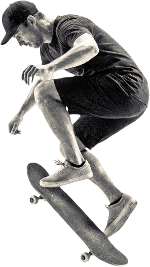
ORIGEN EN CALIFORNIA
EVOLUCIÓN DEL STREET
ERA OLÍMPICA
STREET
VERT
PARK
CRUISER
BÁSICOS
FLIP TRICKS
GRINDS & SLIDES
ICONOS DEL STREET
REVOLUCIONARIOS
INFLUENCIA GLOBAL
COMO NACIO EL KICKFLIP
LOS SPOT MAS LEGENDARIOS
LAS MARCAS QUE CAMBIARON EL SKATE
El skateboard nace en California, Estados Unidos, a principios de los años 50. Surfistas buscaban una forma de practicar cuando no había olas. Así comenzaron a colocar ruedas de metal debajo de tablas de madera. Era llamado: “Sidewalk Surfing” (surf de acera) No existía una industria. Era algo casero y experimental. El skate no era un deporte todavía. Era una adaptación urbana del surf.
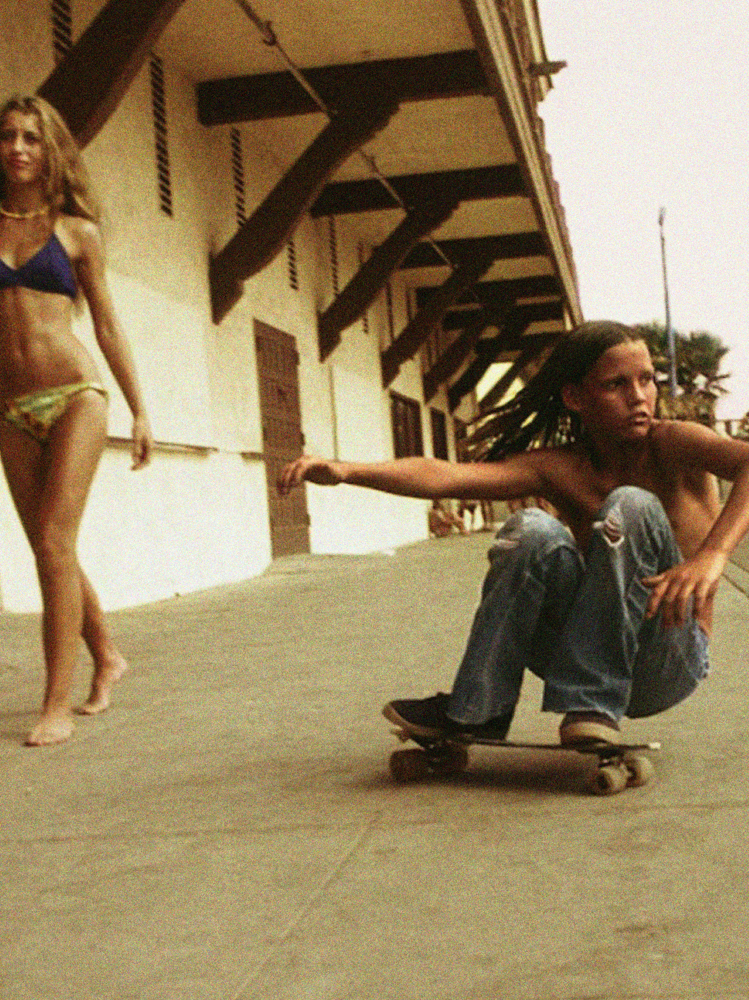
Empresas comenzaron a fabricar tablas oficialmente. Marcas como Makaha Skateboards ayudaron a popularizar el skate. Se crearon las primeras competencias. Problema: Las ruedas eran de arcilla → poco agarre → muchos accidentes. El skate perdió popularidad rápidamente hacia finales de la década.
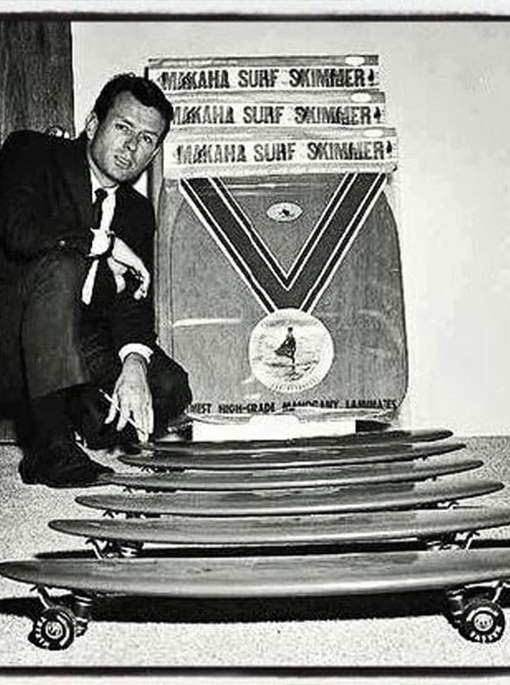
El skate se vuelve más técnico. Aparecen rampas verticales (half-pipes). Surge una de las figuras más importantes: Tony Hawk Comienza la era de los trucos aéreos complejos. Se crean marcas icónicas como: Powell Peralta El skate ya es cultura juvenil.
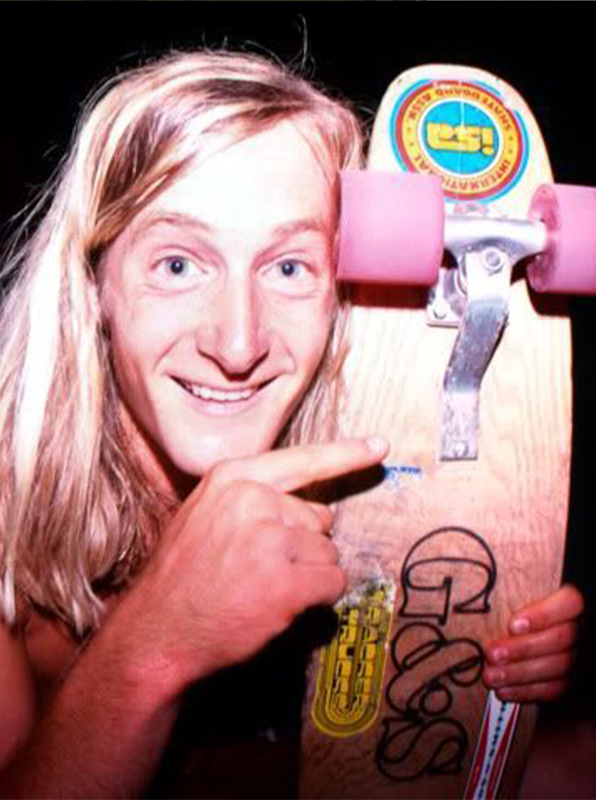
El skate deja las rampas y conquista la calle. Escaleras Barandales Plazas públicas Se vuelve más técnico y creativo. Aquí brilla una mente revolucionaria: Rodney Mullen Inventor de trucos fundamentales como el kickflip. En 1995 nacen los: X Games El skate se convierte en espectáculo global.
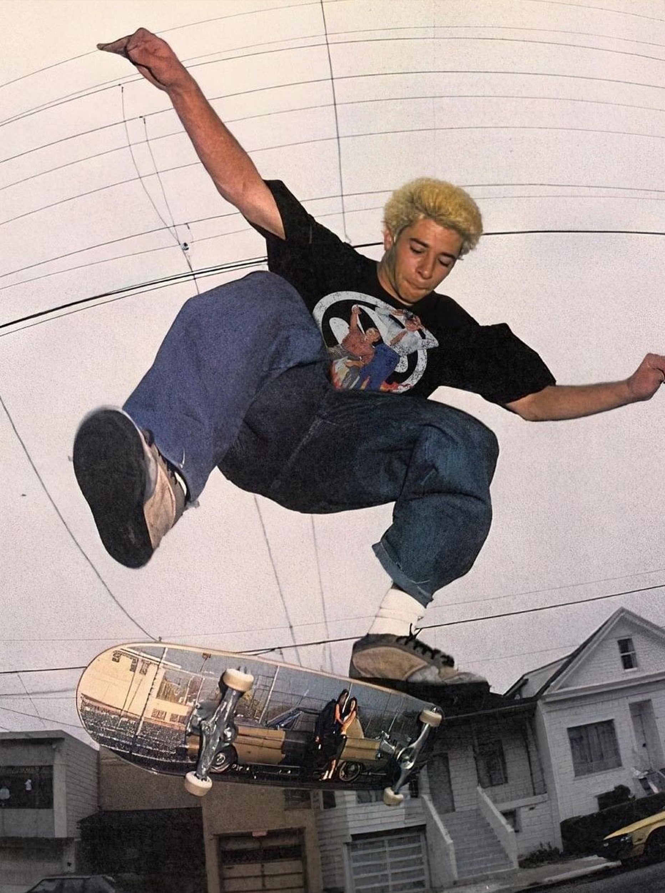
En 2016 se anuncia oficialmente: El skateboarding será deporte olímpico. Debuta en: Juegos Olímpicos de Tokio 2020 El skate pasa de ser contracultura a disciplina olímpica. Sin perder su esencia callejera.
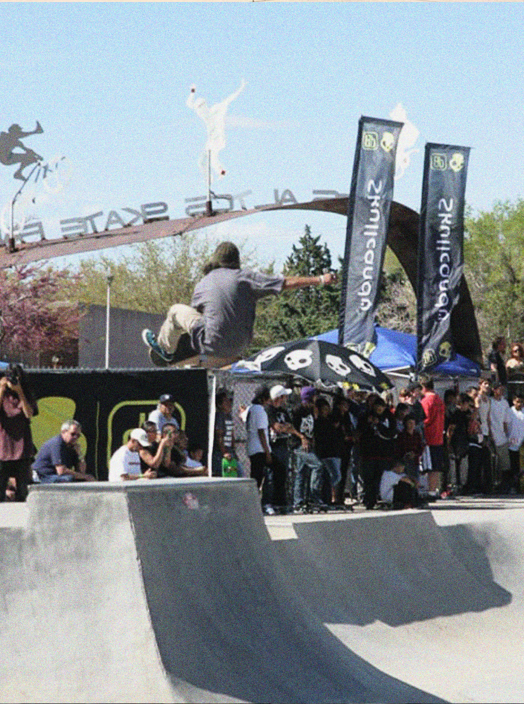
Nuevos talentos dominan la escena internacional. Uno de los más destacados: Yuto Horigome El skate ahora combina: Competencia profesional Cultura urbana Redes sociales Moda Arte Sigue evolucionando.
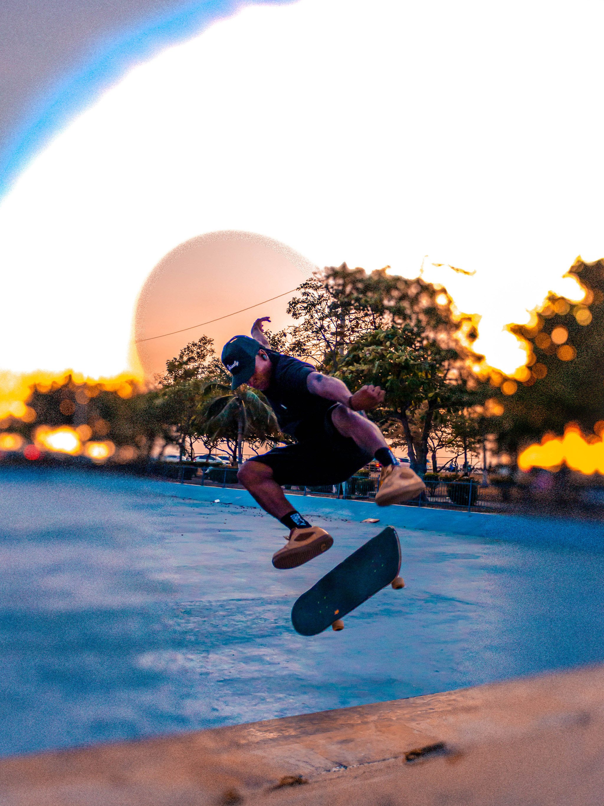
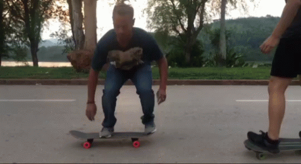
El truco más importante del skate. Consiste en: Saltar con la tabla sin usar las manos Golpear la parte trasera (tail) Deslizar el pie delantero para nivelar Todos los demás trucos parten del ollie. Fue perfeccionado por Alan Gelfand.
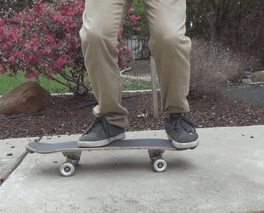
La tabla gira 180° debajo de los pies sin que el skater salte mucho. No hay giro del cuerpo. Es ideal para empezar a controlar rotaciones.
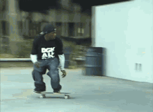
Equilibrio sobre dos ruedas. Puede ser: Manual (ruedas traseras) Nose manual (ruedas delanteras) Parece simple, pero requiere control.
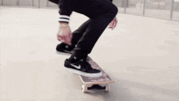
La tabla gira sobre sí misma horizontalmente. Se ejecuta con: Un ollie, Un golpe lateral con el pie delantero Es uno de los trucos más icónicos. Popularizado por Rodney Mullen.
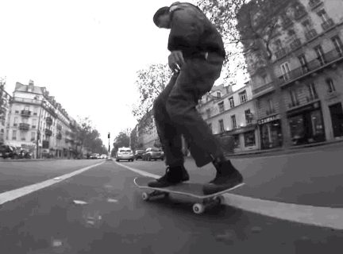
Similar al kickflip, pero el giro se hace con el talón. La tabla rota hacia el lado contrario. Requiere precisión.

Ollie con giro de 180° del cuerpo y tabla. Puede ser: Frontside o Backside Introduce control de rotación aérea.
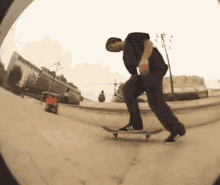
Combinación de: Shuvit 360° Kickflip Es técnico y complejo. Muy común en competencias actuales.
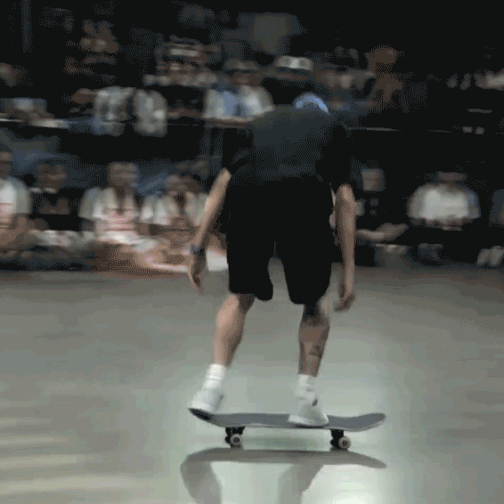
Mezcla entre: Frontside pop shuvit Kickflip Es uno de los más difíciles de controlar.
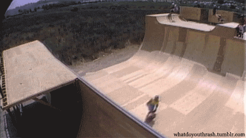
Truco aéreo avanzado en rampas verticales. Giro invertido en el aire. Fue popularizado por Tony Hawk.
Desde el primer ollie hasta los trucos más técnicos de competencia, el skateboarding se construye paso a paso. Cada movimiento requiere equilibrio, control y repetición constante.

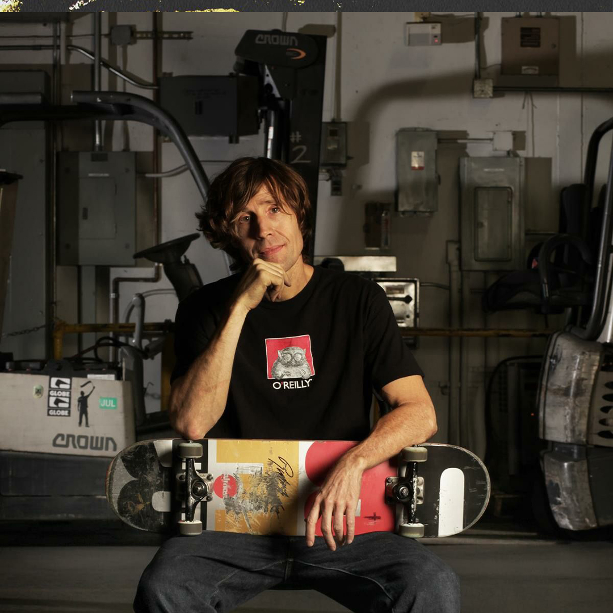
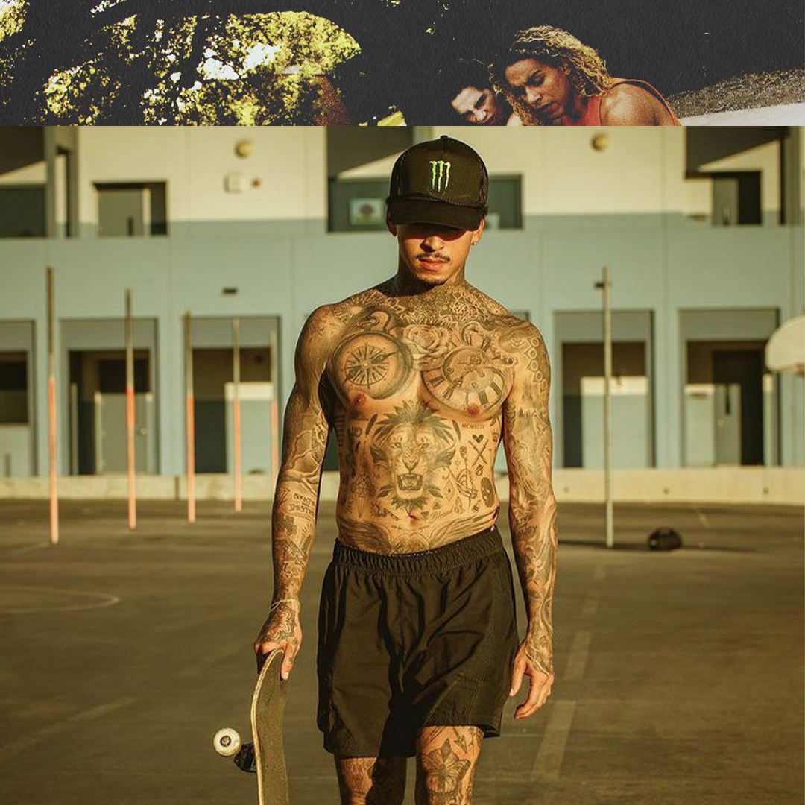
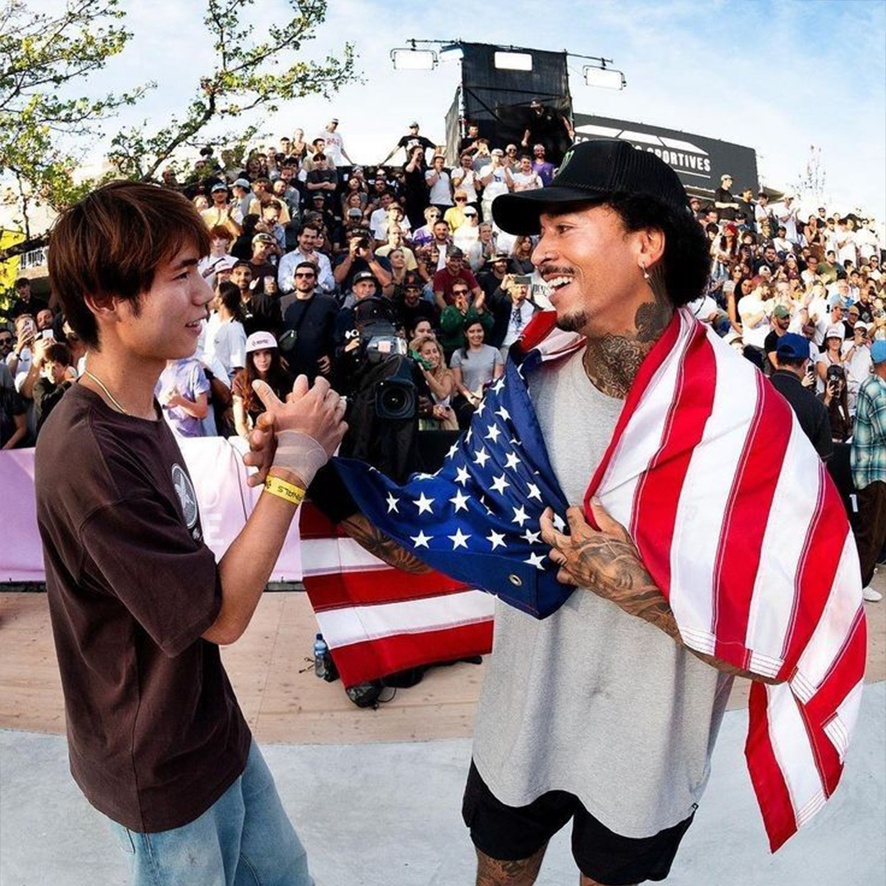
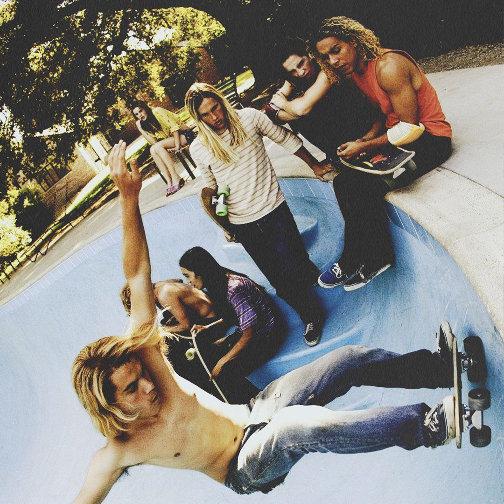
Más que competidores, son los arquitectos del movimiento. Sin ellos, el skate no sería lo que es hoy.
La historia detrás de uno de los trucos más icónicos del street y cómo revolucionó el skate moderno.

Diferencias, técnicas y mentalidad entre dos modalidades más populares del skateboarding actual.

Incluye lugares como Love Park, MACBA, Venice Beach y espacios urbanos que se convirtieron en santuarios del skate mundial.

Desde Powell Peralta hasta Supreme, un recorrido por las empresas que definieron la cultura y estética del skate.